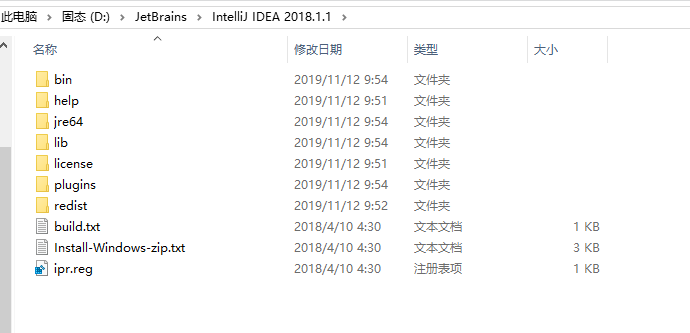
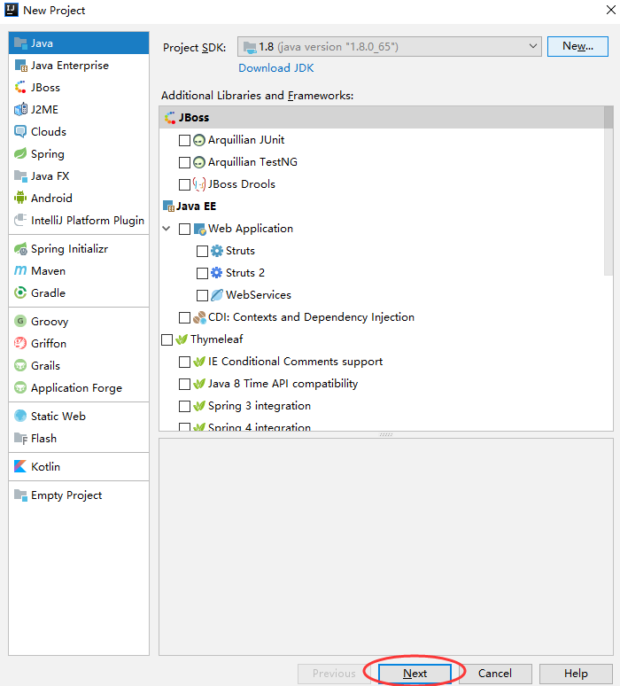

原文连接:https://www.cnblogs.com/evolve/p/11839656.html
一、什么是IDEA？
IDEA 全称 IntelliJ IDEA，是java编程语言开发的集成环境，是目前最好用的java集成开发工具。他最突出的功能是调试（Debug)，可以对Java代码，JavaScript，JQuery，Ajax等技术进行调试。例如查看Map类型的对象，如果实现类采用的是哈希映射，则会自动过滤空的Entry实例。
其次，需要动态Evaluate一个表达式的值，比如我得到了一个类的实例，但是并不知晓它的API，可以通过Code Completion点出它所支持的方法。
二、安装之前我们先去官网下载安装包
官网地址：IntelliJ IDEA
Ultimate为旗舰版，功能全面，插件丰富，但是收费，且按年收费。类似于myEclipse。
Community为社区版，免费试用，功能相对而言并不是很丰富，但是不影响开发使用。类似于eclipse。
如果有一定经济条件的建议购买Utimate版使用，但是一年一付，网上也有各种破解版的，各位自行斟酌。
三、下载好后就可以正常进行下一步的安装了，我这里使用的是Idea.2018.1.1版本JDK是1.8的。
·选择安装路径，这里我是自定义路径位置，你也可以默认。
·根据你所使用的操作系统类型选择32位或64位的桌面快捷方式。这里我的是64位，不知道可以去右键此电脑>属性进行查看。
·选择是否根据文件后缀名关联相应的文件，勾选了Java以后打开java文件默认是从IDEA打开，可以不勾选。
·点击Install就可以安装了
·点击Finish完成安装
四、目录结构说明

·Bin：容器，执行文件和启动参数等。
·Help：快捷文档和其他帮助文档
·jre64:64位java运行环境
·Lib：idea依赖的类库
·License：各插件的许可
·Plugins：插件
·redist：是一些杂项
五、破解方式
1、首先下载一个破解补丁：
链接地址：JetbrainsCrack-2.7-release-str
2、下载好后把他粘贴到Idea的bin目录下
3、分别用记事本打开bin目录下的idea.exe.vmoptions和idea64.exc.vmoptions两个文件。（鼠标右键>属性>打开方式>记事本）
4、分别在最后一行添加下面的破解码，并保存
-javaagent:D:\JetBrains\IntelliJ IDEA 2018.1.1\bin\JetbrainsCrack-2.7-release-str.jar
注意：我这里是自定义安装的位置，所以是D:\JetBrains\IntelliJ IDEA 2018.1.1,如果你没自定义安装路径则默认是C:\Program Files\JetBrains\IntelliJ IDEA 2018.1.1
5、打开IntelliJ IDEA 2018.1.1,点击OK

·选择Activation code 把刚刚第四项的破解码粘贴进去，然后点击OK
6.选择版式，然后点击Skip Remaining and Set Defaults
7.正常启动，破解完成。
五、配置Idea
1.点击Create New Project
2.选择JDK的路径，然后点击Next

3.是否需要从模板创建，不需要、点击Next
4.项目名称，比如说java1309,然后点击Finish完成
5.是否显示提示语言，我们不要显示，这里把勾勾去掉，然后点击close
6.点击我们刚刚创建的项目名java1309，选择src，我们以后所有写的代码都在src里面

7.这边我们新建一个java代码文件，先New新建一个Package包
比如说，com.sz.zelin
我们可以查看下当前的工作目录是否创建了相应的文件夹
鼠标右键>New>Java Class
比如说叫Test
可以看到我们已经成功创建出来了
这里字体有点小，我们点击左上角的File中的Settings搜索font,你也可以使用组合键打开Ctrl+Alt+S
单击font中的Size，设置字体，比如说改成18，然后点击OK
可以看到字体明显变大
现在我们可以来写我们的第一个java代码了
注意，以" { " 开始以 " } "结束
你可以输入快捷键快速生成代码，输入：psvm + tab 输出：
public static void main(String[] args) {
}
输入sout + tab
System.out.println();
案例：
测试：
点击public class Test 左边面的绿色箭头，选择Run 'Test.main()',你也可以选择使用快捷键Ctrl + Shift + F10
结果：
这样，一个简单的，我们的第一个Java代码程序问世了，我们可以去项目目录中找到它。